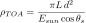
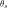
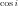

Method
Sensor errors
- striping: detectors of a whiskbroom or pushbroom with slightly different gains; corrected by matching each detector's mean and variance to the global ones (histogram matching per detector line);
- line dropouts: missing lines, replaced by the average of the neighbouring lines;
- calibration: DN to at-sensor radiance with gain and offset from the metadata.
Atmosphere and illumination
- top-of-atmosphere reflectance:

, removing sun angle
and Earth–Sun distance ;
; - dark object subtraction: deep water or shadow should have near-zero reflectance; the minimum DN of each band estimates the path radiance and is subtracted (larger in the blue);
- radiative transfer models (6S, MODTRAN, Sen2Cor) estimate aerosol and water vapour to obtain surface reflectance;
- topographic correction:

of the local illumination angle on slopes.
Example
# destriping: equalise the statistics of each of the D detectors (every D-th line)
for d in range(D):
rows = band[d::D]
band[d::D] = (rows - rows.mean()) / rows.std() * band.std() + band.mean()
# dark object subtraction
band_corr = np.clip(band - np.percentile(band, 0.1), 0, None)Intuition
First make all pixels of a band measure the same thing in the same units; then remove what the air added and subtracted.
Pitfall
Multi-date analyses (change detection, time series) are the most sensitive to radiometric inconsistencies: an uncorrected haze difference looks exactly like a change on the ground.